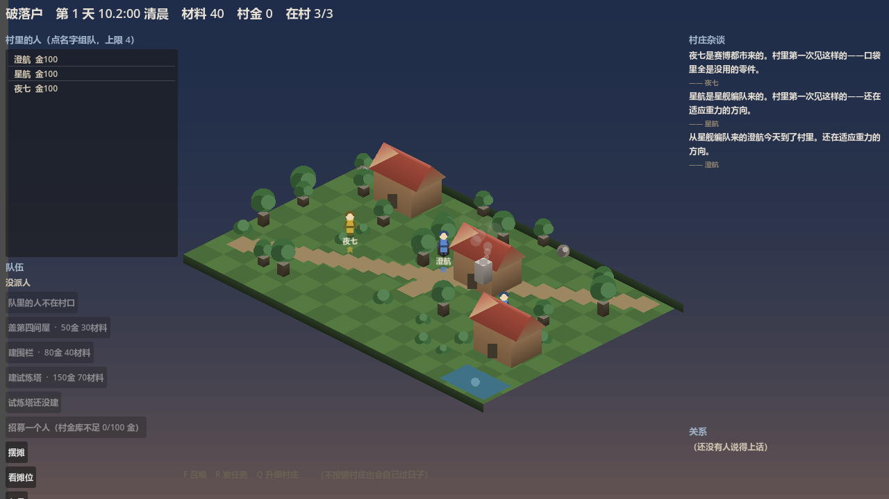

开发进度总览
2026-10-21 这一天：画面几乎没变，变的是规则与引擎。 22 条待定决策被拍板并落地，战斗从「掷一次 0.65 的硬币」换成了真引擎， 标定实测还揪出了几个只有跑起来才会露的坑 —— 后面这几个最典型： 难度目标从没被验过、关系变化没有幅度、回合数算了却被丢掉、 退款代码是死代码、「权重」根本不是玩家拿到的比例、 两层检查让守卫抓不到兜底。 最后一轮把建造流程也补上了：村里终于有两栋能盖的建筑；召唤也不再是白嫖。
今天改了什么（前 → 后）
左边是今天早上的样子，右边是现在。
| 今天之前 | 现在 | |
|---|---|---|
| 战斗 | 掷 0.65 硬币的占位实现；连「对手是谁」都没有 | 真引擎：七个插拔点 + 性格×投入度换算 + 怪物三档 + 中毒 + AI 集火 |
| 副本结果 | 1000 天里 9989 场全败、掉落 0、成交 0 | 能赢、能掉、能卖；首领胜率实测 86.7%（目标 70–90%） |
| 基础价格 | 5/3/8 占位值，还被标成了别的条目的编号 | 3/2/5（D-057 已确认）· 内外两份配置不许分叉 |
| 副本金币 X | 0.10 —— 是在已经不存在的旧游戏上测的 | 0.05 —— 两档实测的固定点（+0.37 / −0.30 金·天） |
| 九种建筑 | 九栋全部「待定」，谁都不敢动 | 七栋裁决不做（人口/采集点/装备三个大概念挡在门外）+ 两栋功能已定 |
| 改价的后果 | 开发者一改价，自检立刻红、CI 跟着红 | 换一张价格表跑自检，仍然全绿（机器背书） |
| 难度目标 | 写着「胜率 70–90%」，但从没验过它落在哪（实测 37.8%） | 首领 180 → 120，实测 86.7%；而且胜率对血量是台阶式的 ⇒ 只能扫，不能估 |
| 关系变化 | 有「友好/敌对」的字样，但没有幅度、没有触发源 | 纠纷 −10 / 成功 +10（等幅）· 触发源 = 副本失败；顺带补上 §7.2 的「关系恶化」事件 |
| 副本耗时 | 战斗算得出回合数却被丢掉，且丢了没有任何异常 | 1 回合 = 0.25 游戏内小时；读不出就大声失败，绝不悄悄当 0 |
| 建造 | 九栋全是「待定」，一栋也盖不了；「怎么建」没定 | 两栋能盖了（围栏=范围 / 试炼塔=加生命），工期由人力决定，建成永久生效 |
| 副本占多久 | 时长写死 11 小时，战斗花的时间完全没进时间轴 | 行程 = 路程 + 战斗（战斗耗时由真实回合数算）⇒ 「这趟占几天」算得出了 |
| 掉落权重 | 60/30/10 的占位值，而且「权重」与玩家拿到的量根本不是一回事 | 拍板的是玩家拿到的份数 50/30/20 ⇒ 权重反推为 100/90/60（精确对上） |
| 召唤 | 「招募一个人」白嫖，不花任何东西 | 花 100 金从村金库招 ⇒ 与「升级村庄」抢同一笔钱；钱不够就拒绝 |
| 召唤池 | 「抽中概率」写在表里，但抽取器有没有按它抽，从没被验过 | **不设设施 / 不命名 / 不分区**；并补上守卫：实测两万次，分布必须与权重相符 |
基线 18 章 · 模块全景
绿 = 做完；橙 = 规则/机制就位、还差内容或平衡；红 = 还没开工。格子里写的是还差什么。
这一天的时间线
-
21:00
两轮问卷：8 项决策 + 2 张表，全部拍板
价格、队伍人数、战斗形态、属性来源、伤害式子、命中、状态效果、敌方形态；加上战斗数值表与建筑/行为链表。
-
21:20
战斗真做出来了
占位实现连同「固定胜率 0.65」整类删除；领域层补上属性换算表、怪物三档、七个插拔点与回合引擎。IT-31 从「缺」变成「已写」。
-
21:30
标定揪出「副本从不变胜」
1000 天实测：9989 场全败、0 掉落、0 成交。根因是数值按 4 人小队算、而游戏只派 2 人 —— 而且那张表的算式我自己就验错了。按两人小队重算，并补了一条「两人小队必须赢第一关」的断言。
-
21:40
补跑标定 ⇒ 固定点浮出来了
X=0.05 两个种子都稳态（+0.37 / −0.30 金·天）⇒ 旧推荐值 0.10 是在已经不存在的旧游戏上测的，作废。顺带发现胜率 100% ⇒ 怪物再调难。
-
21:50
第三轮问卷：关系幅度 + 触发源 + 难度目标 + 耗时
四问全部按建议拍板：N=10 / M=10、触发源 = 同队副本失败、首领调弱到 70–90%、阶段耗时一并定。
-
21:55
难度目标从来没被验过
D-070 写着「胜率预计 70–90%」，可那是估值，没有人验过它落在哪 —— 实测只有 37.8%。而且采集器的胜率根本不能当难度指标（队伍轮换是确定性的，两个种子差 12 倍）⇒ 改用穷举 45 种两人队扫描：首领 180 → 120，胜率 86.7%。
🔴 顺带发现：胜率对血量是台阶式的（85~125 都是 86.7%，130~170 都是 60.0%）⇒ 「拍一个数字」很容易拍不准，必须扫。
-
22:00
关系规则落地，顺带补上一类杂谈事件
一次纠纷 −10、一次副本成功 +10（等幅 ⇒ 一次失败抵掉一次成功）；触发源 = 同队副本失败。顺带补上了基线 §7.2 十类里的「两名英雄关系恶化」 —— 它此前做不了，只因为「恶化的触发经历与变化量」没定。
⚠️ 幂等键用了独立的前缀：否则同一副本「先成功后失败」时，失败会被当成重复处理而静默跳过 ⇒ 该降的关系没降。
-
22:05
回合数算了却被丢掉
战斗引擎算得出打了几回合，但
Resolve只返回日志 ⇒ 回合数被丢掉（04插拔点 7 的原意正是报出它），而且丢了没有任何异常。修法不只是「把数传出来」，还包括读不出就大声失败 —— 悄悄当 0 的话，关系变化的时间坐标会整个塌掉。⇒ 1 回合 = 0.25 游戏内小时（三阶段 × 30 回合上限 ≈ 22.5 小时 ≈ 一天）。
-
22:10
守卫自己也要被验
新写的「首领胜率落在 70–90%」那条断言，变异时把区间放宽到 0–100 之后它照样绿 ⇒ 那条断言当时是装饰。改成断言具体哪 6 支队伍该输（全部含「挂机」）⇒ 与任何区间写法无关，放宽也照样红。
⇒ 变异矩阵 5/5，全量 827/827，verify-all 全绿。
-
22:40
第四轮问卷：建造流程四项，全按建议
沿用现有 5 级阶梯 + 两栋新建筑（两条路并存）/ 工期由人力决定 / 建成永久生效 / 试炼塔只加生命。
-
22:50
做起来才发现的三个坑
🔴 「扣了钱没建成」的退款分支原本是死代码 —— `CanStart` 先查了落点被占 ⇒ 放不下时在扣款之前就被拒 ⇒ 那条路径一次都走不到 ⇒ 看着在防半笔账，实际没防过。改把占位的权威判定交给放置本身，退款路径才真正可达。
🔴 试炼塔用普通档守卫等于没有门槛 —— 实测九种英雄原型全部能赢（连挂机都是 17 回合胜）⇒ 加成白送 ⇒ 改用精英档（只有「莽/肝」能过）。
🔴 「只加生命」原本没有落点 —— 服务只报「+20」时调用方爱怎么加怎么加 ⇒ 改成由服务算出「变成什么」，规则只有一处实现 ⇒ 守得住。 -
23:00
标定重跑：X=0.05 仍是固定点
D-072 改了首领血量 ⇒ 旧数据作废 ⇒ 三档 X × 两种子 × 1000 天重测：0.05 两个种子 +0.42 / −0.01 金/天（稳态），0.07 偏涨 ⇒ D-069 的推荐值依然成立，不用改。守恒律 1000/1000 天全部成立。
-
23:40
副本终于「占了时间」
副本时长原本是写死的 11 小时，而战斗是在行程结束那一刻整场解算的 ⇒ 战斗花的时间根本没进时间轴。
⇒ 战斗完全确定 ⇒ 出发时就解算，把战斗耗时并进行程，归来时用同一份结果结算（不重算 —— 重算会换掉副本标识，幂等键就变了，同一场可能发两次奖）。 -
00:20
「权重」根本不是玩家拿到的比例
拍板的是「玩家拿到的份数 50/30/20」，而抽掉落是「抽 K 次、同种份数累加」⇒ 玩家拿到的是权重 × 数量期望。石头每次给 1-2 份（期望 1.5）⇒ 直接填 50/30/20，实测是 60/24/16（石头占六成，与拍板意图相反）。
⇒ 权重反推为 100/90/60：100×1.5 : 90 : 60 = 150:90:60 = 精确 50/30/20。
🔴 这是实测两万次才发现的 —— 只断言「表里写着 50」的话，那只是把表抄了一遍。 -
12:40
召唤不再白嫖：花 100 金
§10 召唤池四项拍板：消耗=金币、消耗=100 金、不做稀有度（英雄是独特角色不是数值卡牌）、不做保底也不做重复。
⚠️ 扣的是村金库（与「升级村庄」同源）⇒ 花钱的地方有竞争。
⚠️ 村金库只有摆摊抽成一个来源 ⇒ 召唤不是开局就能用：得先有货 → 卖出去 → 抽成攒起来 → 才能招人 —— 这正是基线 §10.2「经营不是为了召唤才存在」要的样子。 -
14:20
召唤池定案：三条全是「不做」
不设设施（就一个按钮）· 不命名 · 不分区（六世界按权重一起抽）⇒ T-005 整条关闭，不再每轮重问。
⚠️ 「不命名」是真决定：`07` §4 的 B3 债写着「**一旦某个名字出现，它就成了结论**……开放问题被一个字符串悄悄关掉」⇒ 明确不设设施 ⇒ 代码里那个按钮不算结论。
⇒ 顺带补上守卫：「抽取器有没有按权重抽」这件事从没被验过 ⇒ 现在实测两万次，分布必须与权重相符。 -
15:10
世界与大事件：通用框架 + 兽潮 + 商队来访
整个游戏终于有了「外面正在发生什么」这一层：模板（这一类事件是什么样的）与实例（这一次）分离，事件按模板声明的阶段推进，结算幂等——存档、读档、再结算，后果不会发第二次。
🔴 「两个实例」不是凑数：商队刻意没有战斗、阶段更少 ⇒ 若框架把「进行中就打一场」写死，商队根本跑不起来。
🔴 又揪出一个守卫自己的坑：测试里推进阶段的循环没有护栏 ⇒ 阶段推进一旦被改坏，测试是挂死而不是跑红 ⇒ 那一档变异等于是「超时」，不是「看红」⇒ 已补护栏 + 超时保护。
⇒ 存档升 0.7（新增大事件实例与已应用的后果键）⇒ 旧档整份拒绝，不写迁移器。 -
17:20
大事件的后果真的落到村庄资源上了
兽潮不再只是「发生了一件事」：打赢给材料与金币，打输扣材料与金币（人畜无损——不扣英雄、不损建筑），而且兽潮的规模随村庄层级递增——村庄越强，来的怪越强，回报与损失同步放大。
🔴 顺手拆掉一个假战斗：守村英雄原先是写死的属性 ⇒ 谁去守村、村里有没有强者，对胜负毫无影响 ⇒ 现在用英雄自己的属性（含试炼塔的永久加生命）。
🔴 还发现一个只在算账时才看得见的陷阱：商队「低于市价」若不限量，玩家就能低买高卖无限套利 ⇒ 限量是这条规则能成立的前提。
⇒ 后果也从「一句中文」变成结构化的（种类 + 数量）—— 落地层不该去解析中文。
⚠️ 数值全部实测过：兽潮 = 三阶段逐场打、超时判负 ⇒ 缩放定 8% 时常规阵容到 5 级仍守得住（精英阶段已逼近回合上限）；10% 就会在 5 级超时判负、15% 4 级就守不住 ⇒ 数值不是拍脑袋定的。 -
18:40
商队真的摆摊了：低于市价、限时、限量
商队来访 ⇒ 村里开一个限时、限量、低于市价的摊，玩家用某个英雄的个人金币买（项目里没有「玩家化身」，钱和货都记在具体人名下）。左栏多了一个「看看商队」按钮。
🔴 钱为什么进村库：守恒律要求钱不能凭空消失 —— 付给「商队」就离开了这个世界 ⇒ 让钱全额进村库（商队的货款结算暂不做，抽成比例是开发者的决定）。
🔴 限量必须随存档走：不存「还剩多少货」⇒ 读一次档货就补满 ⇒ 限量形同虚设 ⇒ 这就是存档升 0.8 的唯一理由。
⇒ 限时也不另造计时器：窗口就是事件的「进行中」阶段，阶段机一到结算就自动关窗。 -
21:10
弱村子不再被罚，多栋房子也能同时盖
兽潮来之前先打一遍（纯计算、不留痕）问「守得住吗」—— 守不住就这次不来，并且告诉玩家一句「这一回兽潮没有来」，不让玩家以为游戏坏了。实测发现弱阵容在任何缩放下都必输，原来那等于每 7 天收一笔「必输的税」。
🔴 造房子这边还揪出一个真 bug：每栋在建的房子都拿到全村的人力 ⇒ 两栋同时盖时同一批人被算了两遍 ⇒ 人力凭空翻倍 ⇒ 现在人力只算一次再分配（多干活的先拿够、别栋分剩下的）。
⚠️ 另外记下一条诚实结论：基线 §14.3 那条「防御设施影响兽潮」当前不成立（试炼塔的加血几乎不改变胜负）⇒ 记为暂不适用，不是「已通过」。 -
22:30
两个「数据看不见」的口子补上了
🔴 建筑根本没进存档 ⇒ 读档后，玩家花 150 金 + 70 材料 + 工期盖的试炼塔凭空消失（连它给的永久加生命都还在、塔却没了）⇒ 现在建筑真的入档了（存档升 0.9，还带影响区——不然围栏读档后没地方摆摊），在建的也会继续盖，不会永远停在 40%。
🔴 大事件也没进经济流水 ⇒ 兽潮每 7 天动一次村库的钱与材料，却是村库收支的一个来源 ⇒ 不记它，标定看到的就是「钱莫名少了」，每次追问都会先怀疑错方向 ⇒ 现在流水里有这一行，且金额是机器可读的数字。
⚠️ 顺带记下两次「守卫是装饰品」的实录：测试写的是复制品（改生产代码它不受影响 ⇒ 五档变异全绿）；断言只说「整体非法」（关掉被测那条检查它照样绿，因为别的原因也非法）⇒ 都已修。 -
23:50
「贪」的战斗属性缺口：标定数据一直是偏的
跑标定时兽潮的预演在游戏循环里抛异常 ⇒ 查下去发现：游戏会创建三种性格（莽/傲/贪），而战斗参数表只有两种 ⇒ 任何「贪」的英雄一算战斗属性就抛异常。
后果不是崩溃，是两处静默的错：① 兽潮的预演每 7 天抛一次 ⇒ 那天的世界事件整段被跳过；② 采集里队伍含贪英雄的副本 ⇒ 被 catch 静默丢弃 ⇒ 实测 1958 场副本结算里约三分之一的英雄从没参过战 ⇒ 标定数据一直是偏的。
拍板「贪 = 攻 10 / 防 5」后重跑：成交 1505 → 4867 笔（×3.2）、成交额 7834 → 31122 金、村库 91 → 806（升级 3 → 5 次）⇒ ⚠️ 之前那批经济数字都是在「1/3 的英雄从不参战」的世界里测的。
守门：新增一条「游戏能创建的性格都必须在战斗表里」的守卫 —— 性格表与战斗表是两份数据，战斗表只查「有没有」不查「是不是全的」⇒ 缺一个只会在跑到它的时候炸，而那通常发生在没人看的压测里。 -
00:20
围栏能挡兽潮了：筑墙 ⇒ 兽潮弱一级
防御设施终于在兽潮里有分量：围栏每建成一座，兽潮的规模等级 −1（最低 0；在建的不算）。
为什么不是「给英雄加属性」：实测里弱阵容是「打不过」而不是「撑不住」⇒ 加属性未必管用；而「筑墙 ⇒ 兽潮弱一级」是一条能经营的策略（围墙 = 抗兽潮）。
⇒ 顺带把基线 §14.3 那条验收重新激活了：它要的「防御设施改变了至少一项结算指标」现在有指标可看（守不守得住、资源多少）⇒ D-082 当时记的「暂不适用」已撤销。
⚠️ 另外两件已拍板、但还没实现：副本难度保持 100%（不动）、自主采集每天 1 份材料（查代码发现它还差「材料进背包 + 自动卖出」两截 ⇒ 下一轮做）。
现在的画面
这是刚才跑起来的实机画面（1280×720）。诚实话：画面本身变化很小 —— 一天的进展在规则、引擎与数值里，不在美术上。但左下角那三个建造按钮、和「招募一个人」那一行，都带着规则了。

还开着的
- 召唤设施的形态（基线 §10.3）：第一版已定「不设设施」（D-078）⇒ B3 债仍开着 —— 以后要改成建筑时，必须先拍板名字
- 建造流程的下一层：围栏与试炼塔现在是固定落点（还没让玩家选位置），且一次只能盖一样
- 经济分布要不要加约束：实测中位 91-93 金 / 最大占比 20.7%–33.7% ⇒ 「一个人富到 1294、另一个人 0」这个分布要不要管？
（`35` §4.9.2 记着这是**开发者的决定**，脚本只负责把数量出来） - 大事件的具体后果：兽潮这一半已落地（D-080：赢给材料 + 金币、输只扣资源、规模随层级递增）；商队的临时摊位也落地了（D-081：低于市价 + 限时 + 限量 + 玩家可买）⇒ §11 的两个实例都能玩了
- 兽潮的数值已拍板：缩放 每级 +8%（实测出来的，不是拍脑袋）、赢 材料 40 + 金币 20、输 材料 15 + 金币 8、商队 八折 + 库存 30、在村全体英雄自动参战
- 基线 §14.3 那条对照实验，实测「不成立」：§14.3 要验「防御设施影响兽潮」，而实测发现试炼塔的 +20 生命几乎不改变兽潮胜负（两套阵容的数据完全一样）—— 因为胜负由「能不能在 30 回合内打死怪」决定，那取决于攻击力不是生命；而第一版的后果是「只损资源、人畜无损」⇒ §14.3 想看的「建筑损伤 / 英雄伤亡」两项指标当前都不存在 ⇒ 那条实验没有可观察的指标。
⇒ 要让它成立，得改其一：① 试炼塔也加攻防（D-074 曾刻意避开）/ ② 兽潮引入建筑损伤（围栏/防护罩才有意义）/ ③ 明确接受「第一版防御设施不影响兽潮」 - 弱阵容必输：实测「挂机」阵容在任何缩放下都必输（30 回合超时）⇒ 兽潮对弱阵容是必输的税。本轮已把失败代价压到材料 15 / 金币 8 兜住，但根因没解（可能的方向：太弱就不触发 / 允许「不守就不结算」）
- 「某次交易发生纠纷」仍缺：它要「次品 / 成色 / 真伪」机制 ⇒ 已裁决暂不做，要做就是新立项